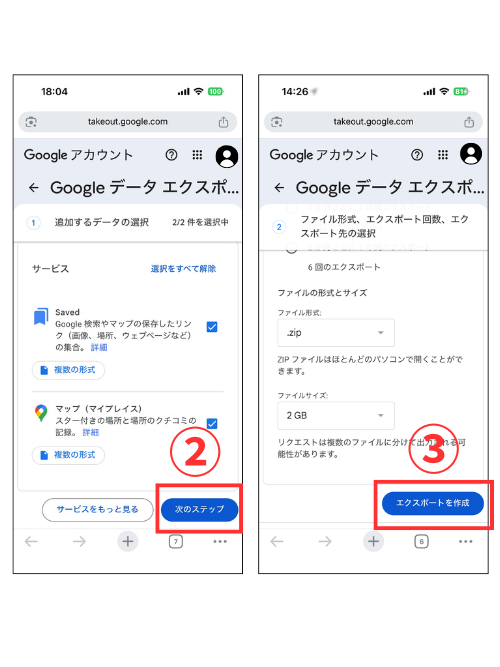
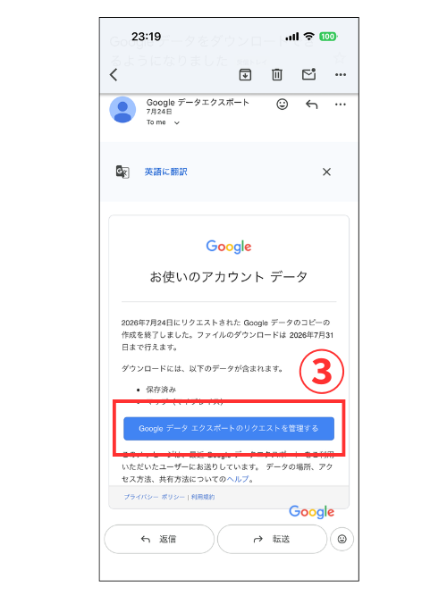
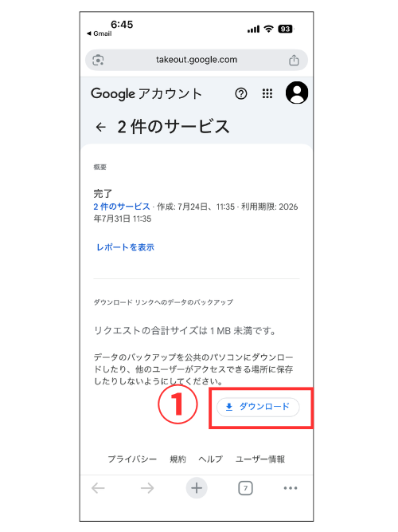
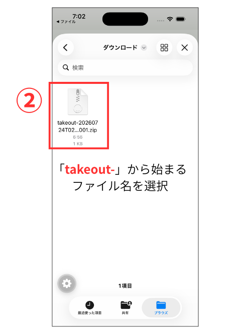

IMPORT GUIDE
Google マップの保存リストを
MapForMe に取り込む
Google マップのデータはアプリからは書き出せません。ブラウザで Google の「データエクスポート」を使います。初回だけの作業で、5分＋待ち時間です。
STEP 1 / 4
Google に申請する
- ①Google のページを開いてログインする
※ このリンクは、取り込みに必要な2つのデータ（マップ・保存済み）が選択済みの状態で開きます - ②下にスクロールし、「次のステップ」をタップ
- ③下にスクロールし、「エクスポートを作成」をタップ
アプリからも同じ手順に進めます: MapForMe の「設定」→「データの取り込み方」を開くと、この4ステップを画面の中で案内します。

STEP 2 / 4
メールを待つ
- ①Google からメールを待つ（数分〜数時間）
- ②メールが届く
- ③「Google データ エクスポートのリクエストを管理する」をタップ
待ち時間はデータ量しだいです。保存リストだけなら数分で届くことがほとんど。届くまでアプリを閉じていて大丈夫です。

STEP 3 / 4
ファイルをダウンロード
- ①「ダウンロード」をタップ
- ②ファイルが保存される

STEP 4 / 4
アプリに取り込む
- ①MapForMe の「設定」→「データの取り込み方」からガイドを進み、「ファイルを選ぶ」をタップ
- ②ダウンロードされた「takeout〜」から始まるファイルをタップ
- ③データ取り込みが開始されます。これで完了です。
※ どこに保存されたか分からないときは、ファイル選択の「検索」に takeout と入力すると、保存場所をまたいで見つけられます。
取り込むとき、リストごとに「リスト / タグ / スポットのみ / 取り込まない」を選べます。すでに MapForMe で整理した内容は消えません。何度やり直しても大丈夫です。

ADVANCED
他の人のリストを取り込む
フォローしているリスト（自分が作っていないもの）はエクスポートに含まれません。やり方は3つ。自分に合うものを選んでください。
A
持ち主に書き出してもらう
まとめて全部ほしい人向け
リストの持ち主に上の手順1〜4をやってもらい、ファイルを LINE やメールで送ってもらう → あなたの MapForMe でインポート。数十件あるリストならこれが一番早い。
B
気になる場所だけ共有で送る
少しだけ拾いたい人向け
Google マップでその場所を開く → 「共有」→ MapForMe を選ぶ。1件ずつだけど、その場で自分のタグを付けられる。
C
自分のリストに保存し直す
Google マップ側も整理したい人向け
相手のリストの場所を開いて、自分のリスト（例: 行ってみたい）に保存。次回のエクスポートから自分のデータとして取り込める。
自分がオーナーか分からないとき: リストを開いて場所の追加・削除ができれば、それはあなたのリストです。